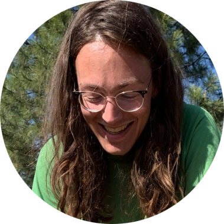

<div class='blurb'>
    <h1>Peter Senchyna</h1>
    <p>Hi! I'm a graduate student in astronomy at the University of Arizona.
    My research is centered on improving our understanding of young stars with far fewer heavy elements than our Sun.
    I use spectrographs on the <a href="https://en.wikipedia.org/wiki/Hubble_Space_Telescope">Hubble Space Telescope</a> and the <a href="https://en.wikipedia.org/wiki/MMT_Observatory">MMT</a> to study populations of these metal-poor stars in nearby galaxies.
    </p>
</div>
